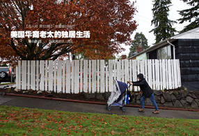

《在人间》 第107期 : 北漂农民...
2017-3-2
《在人间》 第106期 : 我的返乡...
2017-3-2
《在人间》 第105期 : 我的返乡...
2017-3-2


《在人间》 第103期 : 美国华裔...
2017-3-2
《在人间》 第102期 : 在美国,...
2017-3-2
《在人间》 第101期 : 北漂农民...
2017-3-2
《在人间》 第100期 : 北漂农民...
2017-3-2
《在人间》 第99期 : 北漂农民...
2017-3-2